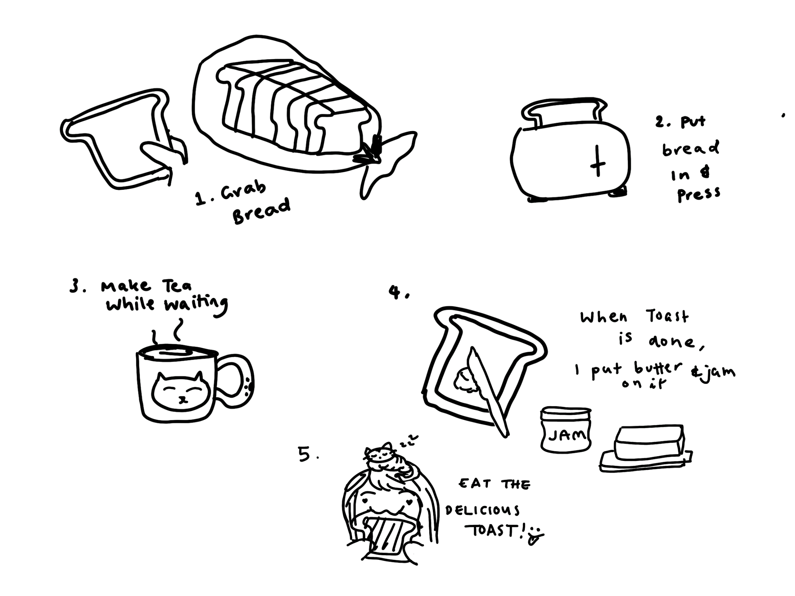

Welcome to TOAST
This is a game of mental thinking. Here are the rules
- Everyone gets a piece of paper/table to draw on.
- Each person gets 5 minutes to draw, on how they make toast.
- Once everyone has completed, show to each other and have a laugh :)
- There is no wrong answer to this. Good Luck!
Time Left:
Below is our lovely senior developer's way of making toast
